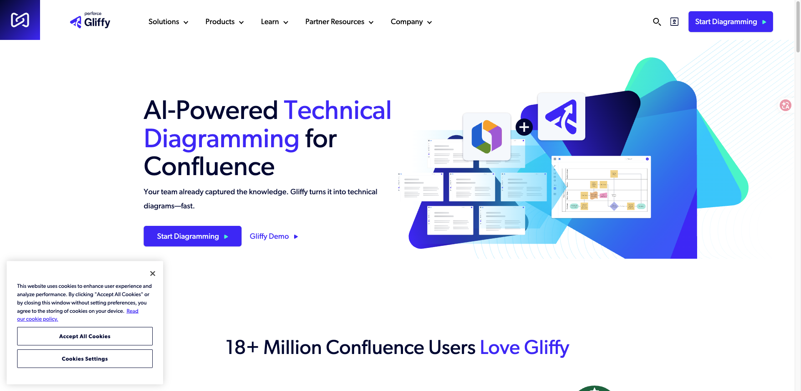

在 Confluence 和 Jira 页面里直接画流程图、UML 和架构图，不用切工具。
复刻一张 Confluence 页面里的 Gliffy 流程图宏
线上出现支付失败告警时，先确认是渠道侧问题还是我方订单状态机问题。下面的流程图是值班同学的标准处理路径，可以直接在页面里编辑。
Gliffy 的视觉语言：它先是一张 Confluence 页面，然后才是图。流程图形状沿用最传统的画法 —— 胶囊形起止、菱形判断、浅蓝矩形步骤、1px 描边、细而规整的连线；不追求设计感，追求“wiki 里随手画的一张图”。

Perforce 旗下的图表工具，最早以 Confluence / Jira 插件出名。核心场景是在 wiki 页面里直接插入流程图、UML、组织架构图和技术架构图，拖拽操作，几乎不需要培训。
也提供独立 Web 编辑器和白板，但真正的差异点一直是“它长在你的 Atlassian 文档里”。